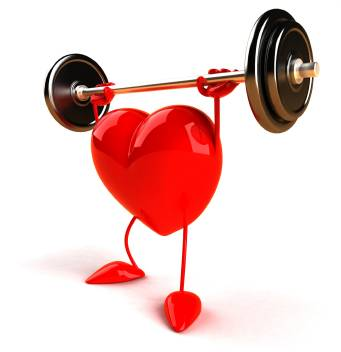

Regresar
Regresar
| Inicio | Deportes populares | Deportes mas extraños | Beneficios |
| Los deportes son una forma de ejercitars,nos ayudan a tener una buena calidad de vida y a mantener nuestra salud lo mejor posible,lo mejor haciendo lo que mas nos gusta | Deportes mas populares y mas practicados | En el mundo de el deporte no solo existe el futbol, en la actualidad har todo un universo de disciplinas deportivas que no son tradicionales y que son poco practicadas | |
|  | EJEMPLOS DE DEPORTES EXTRAÑOS: Jai-Alai, Kabaddi, Hurling, Chess Boxing |
Beneficios
|
|
|
Clases Virtuales |